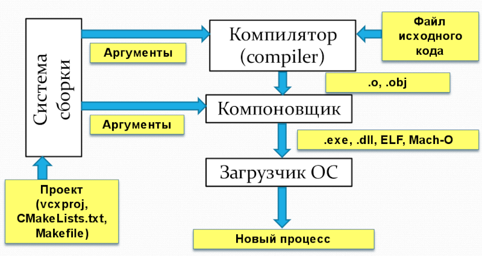

Драйвер компилятора объединяет фронтенд и бекенд как удобный фасад, в полном соответствии с паттерном Фасад (Facade). В том числе он:
Вместе с языком C в моду вошла раздельная компиляция — компилятор C обрабатывает один файл на языке C и получает объектный файл, где для каждой функции сгенерирован машинный код, но информация о функциях ещё не потеряна, поскольку не все функции известны (реализации некоторых функций находятся в других файлах проекта или в статических библиотеках). Соединением объектных файлов в программу занимается компоновщик, а не компилятор:

На практике хороший компилятор может сам вызвать компоновщик как утилиту командной строки. Для поиска компоновщика в системе используются эвристические методы и переменные окружения, такие как %ProgramFiles% на Windows. Например, вы можете попытаться найти компоновщик в составе Visual Studio, перебирая заранее известные пути для различных версий Visual Studio.
Для вызова внешних утилит в C++ можно использовать system, но у неё много ограничений: например, нельзя прочитать сообщение об ошибке из другого процесса, нельзя его остановить, нельзя запускать его асинхронно. Часть недостатков устраняет POSIX-функция popen, на Windows доступная как _popen.
Драйвер обрабатывает аргументы командной строки: пути к файлам, опции компиляции, опции компоновщика. Для простейшего компилятора будет достаточно обрабатывать только пути к входным файлам и несколько простейших опций, например: